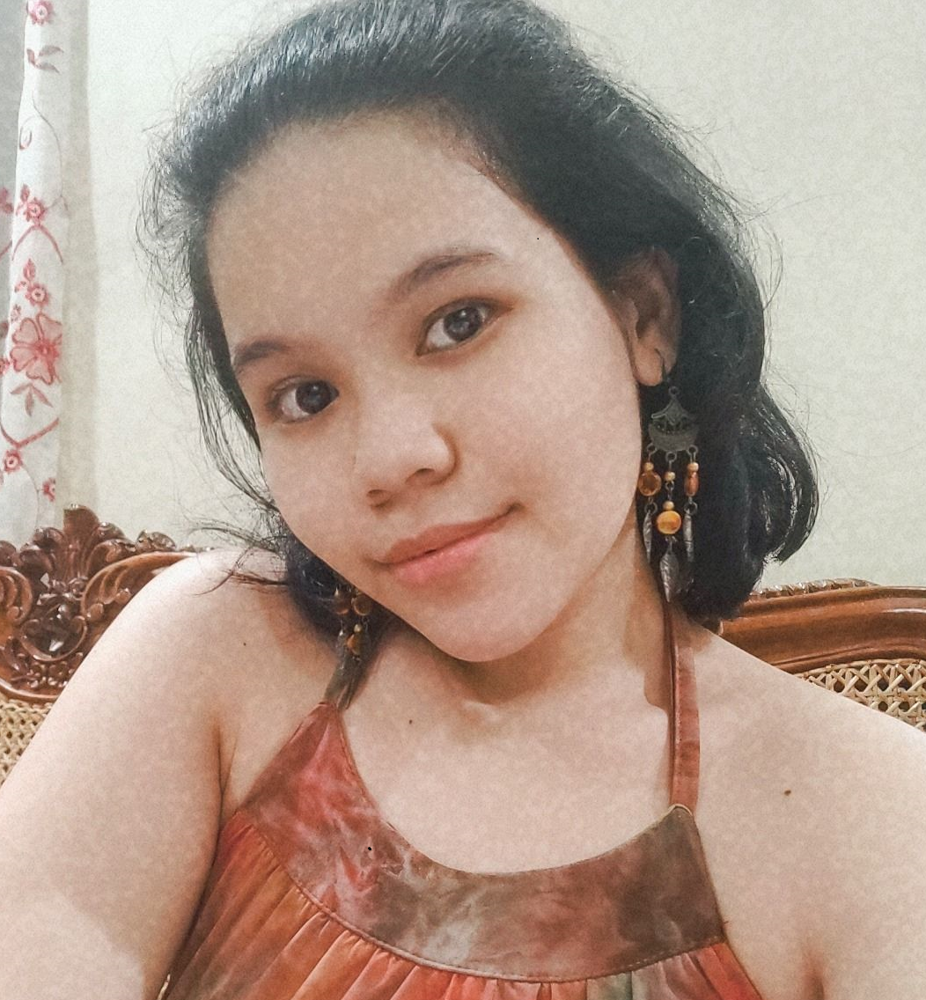

Name: Aleezah Maye P. Rolle
Nickname: Eeza

- My favorite CMSC subject so far is CMSC 22 because I can easily understand it and GUI really caught my attention.
- STS 1 is my favorite GE subject because I really enjoyed the integration of science and technology. I also like working with my groupmates to create a video.
- My favorite programming language is Java since I understood how each class and objects work and I am confident to code in it.
- No doubt, chicken nuggets will always be my favorite food in the whole universeee!